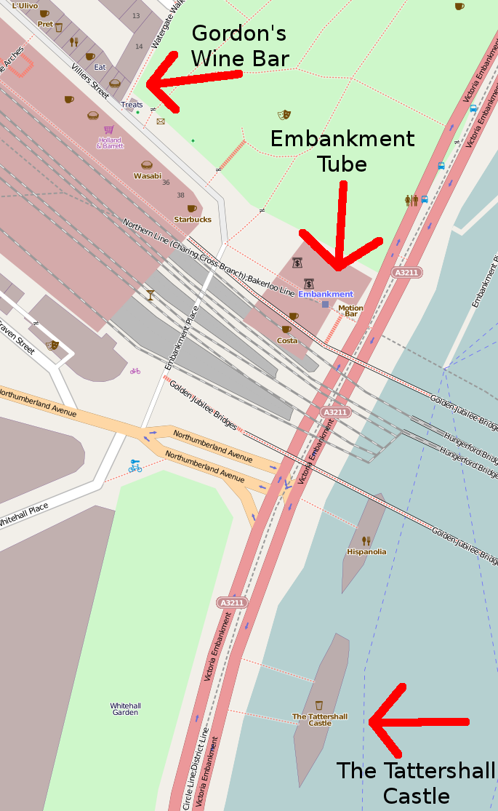

I'm turning 30 on the 2nd October and would like to celebrate by doing a little London night out. The plan is to do a mini bar crawl near Embankment on Saturday the 1st October. Being a Saturday I think we should start early and then catch the last train home.
We start in Gordon's Wine Bar. I'll get there at 4 and try to grab a table. It's a lovely cosy little bar for any cheese and wine lover. We can then stay for a few hours or until we run out of table space.
Then we move on to the Tattershall Castle. It's an amazing old steamer that has been converted to a bar that is permanently moored on the Thames. We'll stay there for a bit and look out across the river.
If anyone is still standing by then we can walk east toward Walkabout Temple before getting the last tube home.
If you don't fancy spending the whole afternoon and evening out then feel free to come along whenever you like and likewise feel free to stay out all night. It's going to be quite a relaxed affair, so just give me a call or txt when you get to London and I'll tell you where we are. The mobile reception is not good in Gordon's Wine Bar, so if you can't get through then I'm probably still there.
Also feel free to bring any partners, friends, non-facebook people, etc. The more the merrier! :-)
Gordon's Wine Bar
47 Villiers Street, London, WC2N 6NE
http://www.gordonswinebar.com/
Tattershall Castle
Victoria Embankment, Whitehall, London, SW1A 2HR
http://www.thetattershallcastle.co.uk/
Walkabout Temple
Temple Station, Temple Place, London, WC2R 2PH
http://www.walkabout.eu.com/venues/walkabout-temple/
